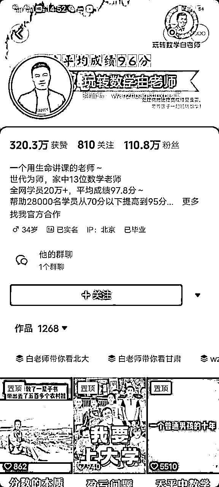

来源：https://b16xnqwk20.feishu.cn/docx/Xw2Ed2ic5oWGqjx1Z2AcUrmVndg
生财圈友们大家好，我是宋老师（账号：宋老师教你做课）
目前是全网做课卖课赛道头部，年变现1000w+，全网22000位学员中有100多位变现50w+
去年写过一篇精华帖，大家可以回顾一下 的实操经验
这次还是私域，但是我们玩点不一样的——
你有没有想过，靠一套可复制的模型，可以在三天内撬动私域的僵尸粉，从而达到变现10w的目标？
别眨眼，今天就给大家分享我已经完全跑通的【如何用0元撬动10w卖课】的实操经验。
前两天刚跑通的最新数据👇👇👇
在正式开始之前，先做个简单的自我介绍，方便大家快速知道我的价值：
我的6个标签：
1.目前自媒体头部的做课&卖课博主——流量能力
2.原来的新东方总监，最高记录同步管理80w学生社群一一教学能力
3.仅发售600人变现12W+，成功打通最简发售模型一-发售能力
4.22000多位知识博主的老师-一成绩
5.知识类MCN创始人
6.12场线下课，场均100+，还在持续开课中--培训能力
好了，废话不多说。
今天我分享的主题主要有这么几个模块：
1.为什么要开9.9训练营⭐⭐
2.9.9训练营转化率40%的秘诀⭐⭐⭐
3.超好用的社群运营小技巧⭐
前几天我做了一个知识付费三天创富营，
其实就是 9 块9，但我没收钱，因为我这个段位收 9 块 9 太 low 了，我就让他们免费进，但是模型是一样的，玩法也一样
先给大家汇报一下数据，
首先两个群，一个进了 115 人，一个进了 112 人，
我们有三天的时间，第一天写定位作业；第二天我们会进行第一次直播转化；第三天我们再会跟一次直播，给学员推一波课，
最后的成绩是，进群227 人，综合转化率30%
这30%转化率转出来的学员全都是之前加过我，但是没有付费的，通过3天营的形式给他们洗一遍，重新让他们成为我的付费学员
这种模式我每个月会弄一到两次，每个月可以多盈利差不多10w块钱
我跟大家讲个掏心窝的话，这个活动至今我们做了十几次，洗的全都是没有给我付费过得用户
但是每个月都可以多出10w左右的收益
所以我建议你们也要用这个活动，因为这就是一次自动赚钱的机器。
为什么这么说呢？因为但凡你每个月只做一次，来个四五万块钱也挺香的，对不对？
给大家举个例子，像数学头部，白老师，年卖课过亿。前几天我刚帮他磨完私域升单，转化率从2%转到8%

专注中老年健康的，林教练
这两位老师都是我的学员，并且也用过这种9.9的训练营模式，轻轻松松就可以实现私域收入的翻倍
所以不论是大博主还是小博主，只要你私域有量的，都可以试试这种方法
首先我们要明白，9.9针对的对象是之前的一些白嫖党，要不就是他跟你聊着聊着他就不聊了，或者说你加了微信你也没及时聊的人，需要重新让他跟你再认识一次，激活一次，然后开始拉群。
所以在【准备阶段】还是很重要的，主要分为【唤醒用户】和【教练拉群】两部分
唤醒客户怎么唤醒？这个是很多人的盲区，不知道怎么在跟那些老粉沟通。
那怎么去沟通？怎么去触达？
其实就是重新启动福利活动、私域拉人这几句话
我们唤醒用户是为了让他们去参加我们免费的这个训练营，所以你们只要私域里面有点存量，其实都可以拉
基本30% 左右的一个拉粉率没有问题，简单来说就是你触达 100 个人， 30 个人愿意进群
但是要记住，活动流程可以复杂，但是一定要让他知道下一步要干嘛。
因此在整个的这个转化里面，会先做这样的图，图上面有福利有问卷
先让他们去参加老粉的福利，而且是只要填了问卷都可以参加的
教练拉群并不是盲目地拉，这样只会加重群运营的负担，所以我们在开始的时候就需要进行一波意向筛选
前两天我做的三天营触达了 1000 个人，其中有小 400 人回复了，然后拉了 40% 的进群率
触达话术给大家看一下，就是一个很浅不硬推的话术，就是说像聊天一样的感觉
这个话术为什么要做呢？
原因就是筛人，因为很多人做 9 块9或者做公开课时直接给人发群链接，但是那种其实不好卖。
为什么？因为你没筛选对方的意向
很多人都有一种进群癖，就是想进很多的群，但是不在群里面不学习不发言，对不对？
所以我们说做一次筛选，你也可以把这个话术改成你自己的。
比方说我举个例子↓
在吗？我想拉个群，作为老学员，作为老粉丝，我把我两个月帮助一个学生提分 60 分的经验分享一下，做了一个3天英语提分营
并且总结了一下我帮助 100 个孩子提分的经验，限量 80 满员，如果你对英语提分有兴趣的话，
扣个 666 我拉你
接下来他如果扣 666 的话，就让他填问卷
为什么要填问卷呢？
因为要调研这些粉丝的质量到底哪些好，哪些不好，你要心中有数，要知道他现在有没有做课，其中他有没有接触过知识付费等等，你要摸一次牌，防止他根本啥也不会
问卷这个环节，就是让他问他很简单的问题，这个问卷不要做复杂了，做复杂的话你们就进群率很低的，
就做三个问题，第一个你做什么课的？第二个你粉丝量多少？你现在的问题和卡点是什么？
这就完事了，因为这个问卷本质上是为了筛选一下，加个小门槛。
你不是为了筛掉它而是为了让它有一个仪式感，知道这个营需要回答问题才能进
填完之后就直接加助教微信了
一定要设立助教的身份，不要用IP的身份
一共三个信息环节，两次用户问答，筛选客户意向就可以了。
那么第一天开营的过程是干嘛呢？让他们打写作业。
写什么作业呢？很简单，就是一个很小的定位作业，给他批改一下，那个批改很简单，几秒钟的时间
同理，
做英语的老师，让学员读个单词；做股票的，让他发一下你的现在的盘口/现在选的股票都行
你给他指点一下，这个不要做的太繁琐，让他对你有一个交流感就可以了
因为学员发了作业，我回他，这是一个建立信任的过程
要不然人家为什么要买你课？肯定是因为信任，所以开营很关键，活性和群内的影响热度都会影响后期的转化，所以我们在第一天我们不考核任何的转化率
我们考核什么呢？考核写作业率、作业完成率，所以我们总计大家看免费群的作业完成率都不会特别高的，25%左右差不多了，
所以你可以拿我的率去衡量你的率，基本上差不多。我们测试了好多个业务，其实都跟这个率差不多。
同时在当晚的作业环节会引导他明日到课
也就是在批作业的时候会下一些话术，好比说明天直播我会讲xxxx东西，就是为了让他们去明天听直播
引导明日到课之后，第一天开营的时候，我们也会邀请一些已报名的学员，就是就是充当一些已报名的用户证言，
同时如果会促这个信任的点，为了让他们去产生跟我们的联系，
我们发现一个数据就是在第一天回 “老师辛苦了” 的人基本上第二天都报名了，就是第一天他连作业都不交的人，基本上他不就不报名，
所以我们在第二天的时候会促他完成作业，所以你记得一定是人们在这个群里面付出了之后才会有回报，才会去继续往下跟你走。如果一个人他连你课都不听，作业也不完成，他不会跟你继续产生交流。
那么到第二天的过程其实就是开始我们卖课了，就需要我们去盘点数据。
好比说上次我们的数据，累计观看了 144 个人，人均观看时长 24 分钟，我是从 30 分钟开始推课的，那么实际有多少人从 30 分钟之前跳出了？平均观看时长多少？这些都是需要复盘的
在我们第二天推课的过程中，我前半部分讲的肯定是讲解干货，
干货有一部分我放到我的训练营里面，所以你们想完整的学习这个东西的话，需要去到训练营去学，就这个逻辑，
所以本质上来讲的话，其实卖课不丢人，很多老师觉得老师这样是不是套路啊？
但是你本质上不是为了卖课赚钱，而是你要把不付费的知识免费讲给他们，让他们产生期待，付费的知识让他们觉得要在营里面付了费才能学，
一定要给粉丝边界，你该听的干货，我给你讲；不该听的你就得付费，绕不过这个关。
接下来我们来说说这个三级火箭，不同的层级对应的是不同的用户，解决的也是不同的需求
这样的话每一级都有相应的目的，尤其是把白嫖党抛出去之后，大家就成为了一个集体
好比说，大家要共同去冲40 名才会有免单，共同冲 30 名才会有额外课程福利，共同冲 15 名才会有技术指导
就这种核心逻辑本质很简单，所以你是通过福利的叠加冲上去的
所以在第二天的时候，很多人都会自动开始报名，这时候可以进行接龙活动
氛围营造好了，基本上 10 分钟之内就能进一两万块钱，所以本质上就是能节高，节省你大量效率的内容啊。

同时光有接龙还不够，群内还需要有大家的付款截图，增强真实性
所以助教会引导学员发付款截图在群内，这样我们方便记录，本质上也是为了促进群氛围，也让其他的学员知道，剩下的名额不多了，得赶紧抢
而且前面3级火箭中，40 个名额以下我们没有任何福利，所以他们会赶紧抢前 40 个，这样的话其实我们整体就卖得很多
然后先接龙再报名，当然这里面接龙的人会有一些不报的，就是他当时把名额占了，他后来不报，我们就催他报就好了，所以整体逻辑大概就这样的一个框架。
首先需要让第二天没到场的人第三天去听
同时第二天犹豫的人我们也会逼着他第三天再去听，因为第三天讲的内容是第二天的进阶版
但要知道第3天的到课率肯定不如第一天，因为你已经卖课了，你卖课之后就会有一些人不听了
不要在乎那些人，你只在乎能给你提供价值的人，而不在乎那些不能给你提供价值的人。

Day3很重要的一步是抽奖结营
我们当天下午会把抽奖小程序发到群里去，而且只有报名且接龙的学员才可以进行抽奖福利的
这时候有些学员就会觉得自己要错过大奖了，也会去报名
所以大家看整个链条是一层一层又一层的，环环相扣
这时候可能会有老师犯嘀咕了，抽奖在哪做？怎么做？
今天我也无偿都告诉大家。有一个抽奖小程序可以直接抽奖↓↓
这时候有人可能会问：那我怎么让一部分抽，一部分人不抽奖呢？
很简单，抽奖小助手里面有个功能叫【设置抽奖口令】，只要报过名的人，你给他发抽奖密码
抽奖链接可以直接发在群里，之后我们再私发给已经报名的学员抽奖口令，
不仅可以解决部分人可以抽奖的问题，还可以让那些抽不到奖的人有一定的心理落差
在第一步拉人的时候，如何有效区分应该拉哪些人？打标签。
因为三天营的组成对象基本都是一些白嫖党，都是你之前没聊成的人，现在把它放在这里面回锅一次，所以也把这种方法称为私域启动 CD 意向用户
什么叫 CD 意向用户？就是要给用户打标签， a 级标签、 b 级标签、 c 级标签、 d 级标签
a 级标签可能是买过课的， b 级标签可能是问过价的， CD 级都是白嫖党
这些都是私域运营的基本操作了，我之前在我的私域课里也给大家讲过
拉群就是把 CD 级的用户统一通过这一轮洗一下，拉群的时候直接对标这些用户即可
打标签看起来简单，但却可以快速帮助你找到目标用户
在拉群的过程中我们会用到一个软件，需要的找我就行。不打广告，哈哈哈
这个它软件可以自动拉人，直接自动就形成群了
包括可以设置自动回复，自动通过好友等，功能非常的强大
很多人是看直播是跳跃性看的，就是有时候看一眼，然后跳出去干点这些事，又再进去看一眼。
所以我们一般会做同群转播，就是我同时在群里面把我直播的图截进去，然后逼着他们再去看直播，
转播的时候采用简短文字描述+PPT截图+直播链接的模式就可以，文字要有吸引性，这样很多学员也会被突然吸引进来看课
同时还有促到场的话术，就今晚 8 点讲什么内容，然后给他发点资料
最后报名的时候发点资料，让他每次能跟着节奏走。
我们一般现在逻辑是在促到场的时候发一半，后面结尾的时候再发一半
复盘是最重要的一步，通过复盘可以知道目前做得地方有什么问题，有哪些地方需要改进
所以我建议大家在做三天营的时候，不论是第一天还是最后一天，都需要进行数据复盘、群动作复盘
我这有些数据表，可以拿来参考。就是几个核心的数据，做好跟盯即可
Day1复盘：
Day2复盘：
9.9三天训练营其实是一个简单高效可以快速复制的模型，
只要你私域有人，每个月轻松赚几万块不是问题
所以不论是有没有做私域，或者是还在纠结做不做私域的小伙伴们
在平台政策多变的当下，一定要把握好自己手里可以利用的资源
“私域一响，黄金万两”
也欢迎大家有知识付费相关的问题找我讨论
希望大家2024卖课生财，感谢看到这的每一位老师！
我是宋老师，已经帮助了22000位学员做课卖课，欢迎和我一起卖课生财！